Step-by-step guides
The most common tasks on screenshots. The numbers in red circles are explained right below each picture.
Screenshots come from a demo till in Czech. Staff switch the language with the flag button in the top bar – the buttons stay in the same place.
Selling and payment
Add items with the scanner, a tile or search. Pay with the button or the Enter key.

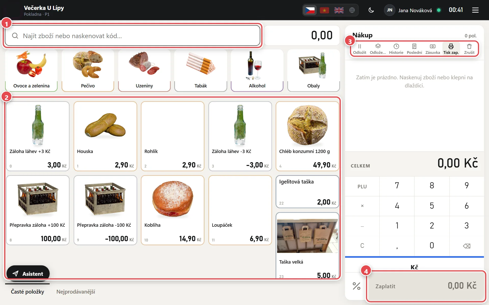
- Search and scanner Scan a barcode or type part of the name. The scanner always adds the item, wherever the cursor is.
- Item tiles Tap to add one piece. Switch groups at the top; Main products and Best sellers at the bottom.
- Bar above the sale Park and parked sales, Receipt history, Last receipt, Drawer, Print on/off and Cancel sale.
- Pay Opens payment. The Enter key does the same when the search is empty.

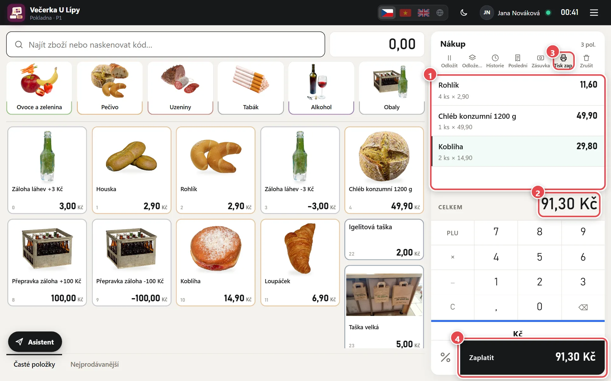
- Sale Each line is one item. Tap a line to change quantity, price or give a discount.
- Total Amount to pay including VAT. Cash is rounded to whole crowns.
- Print on/off When off (crossed out), the receipt is not printed. The till remembers it; you can always reprint via Last.
- Pay Tap, or press Enter.

- Payment method Cash, Card (via your own terminal), QR payment or Split (the stacked icon on the right).
- Customer gave Tap the notes and coins the customer handed over, or type the amount.
- Change The till calculates the change.
- Confirm payment The receipt is saved and printed (if printing is on). With EET 2.0 set up, the sale is sent in the background. Enter works too.

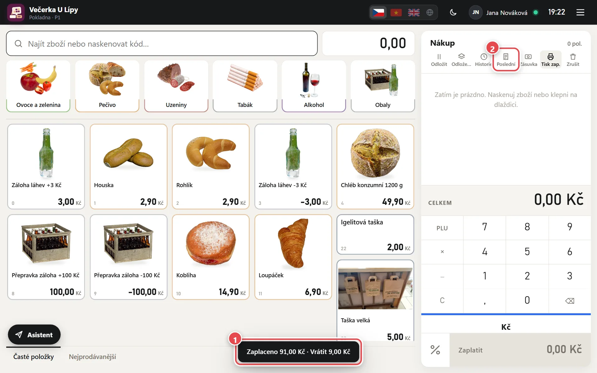
- Confirmation The paid amount and change show at the bottom. The sale is empty for the next customer.
- Last Opens the last receipt – print a copy, an invoice or void it.
New item and price label
Create a new item from the menu ☰ → New item, or right while selling when the till doesn't know the code.

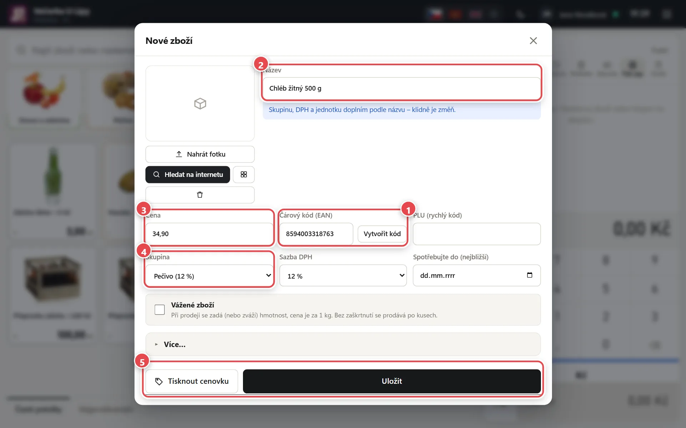
- Barcode Scan the code. If the SuperKasa shared database knows it, name and photo fill in by themselves. No code? Use Create code.
- Name The name on the receipt and price label. Similar items are suggested as you type.
- Price Selling price including VAT.
- Group and VAT The group sets the VAT rate and the tile where you find the item. Check the VAT rate next to it.
- Save and print Save stores the item, Print label saves it and prints the label right away.
Printing price labels
In Admin → Print price labels you print labels for many items at once – on the receipt printer, thermal labels or A4 sheets.

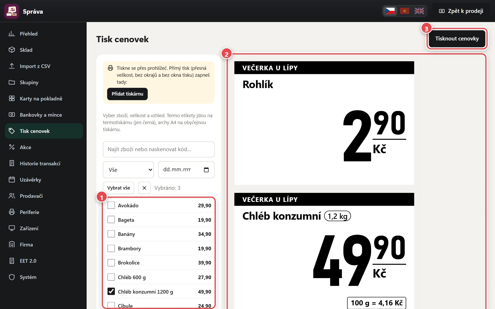
- Items Tick the items. Use search, a group or a date in the “Price changed since” field (labels only for repriced items).
- Preview Exactly as the labels will print, including the price per 100 g or 1 l.
- Print labels Prints the selected labels.

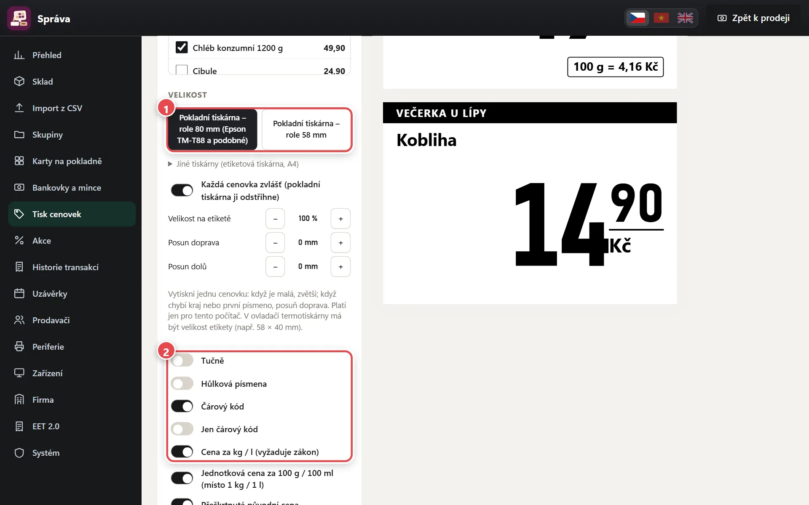
- Size 80 or 58 mm roll. Thermal labels and A4 sheets are under “Other printers”.
- Look Switch on bold, capital letters, barcode, price per kg or l (or per 100 g) and the shop name.
Closing the till
At the end of the day count the cash in the drawer and close. There is one till for the whole shop, closed once for all devices.

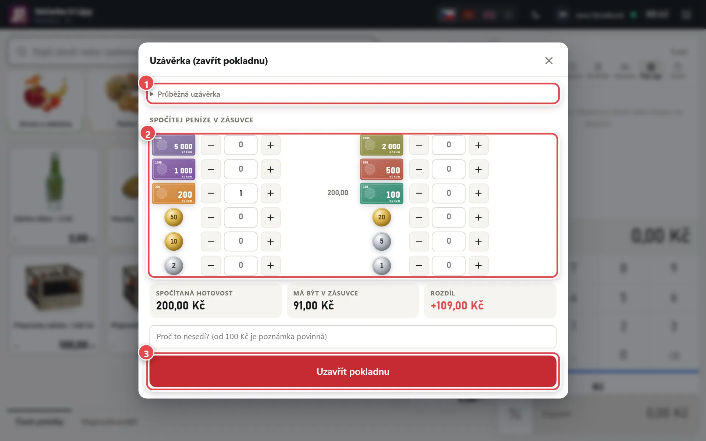
- Interim report Sales during the day without closing.
- Count the cash Enter the number of notes and coins. The till adds them up and shows the difference.
- Close register Closes the day and shows the closing report. Press Print to print it. If someone forgets, the till closes itself at 23:59.
Daily sales and VAT for the accountant
Print sales for a day, a period or one closing, with a breakdown by VAT rate.

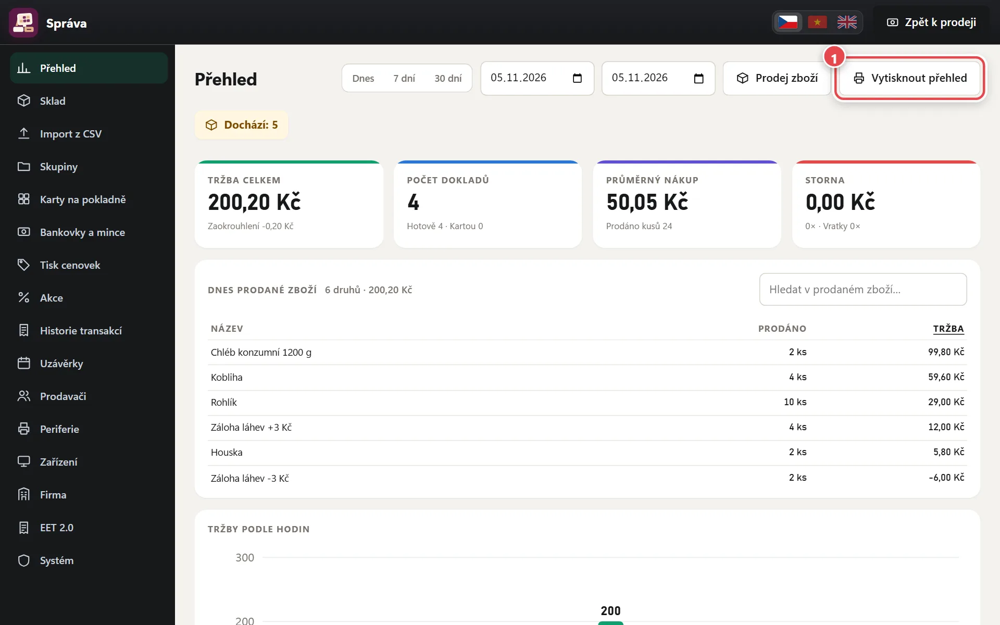
- Print a report Opens report printing.

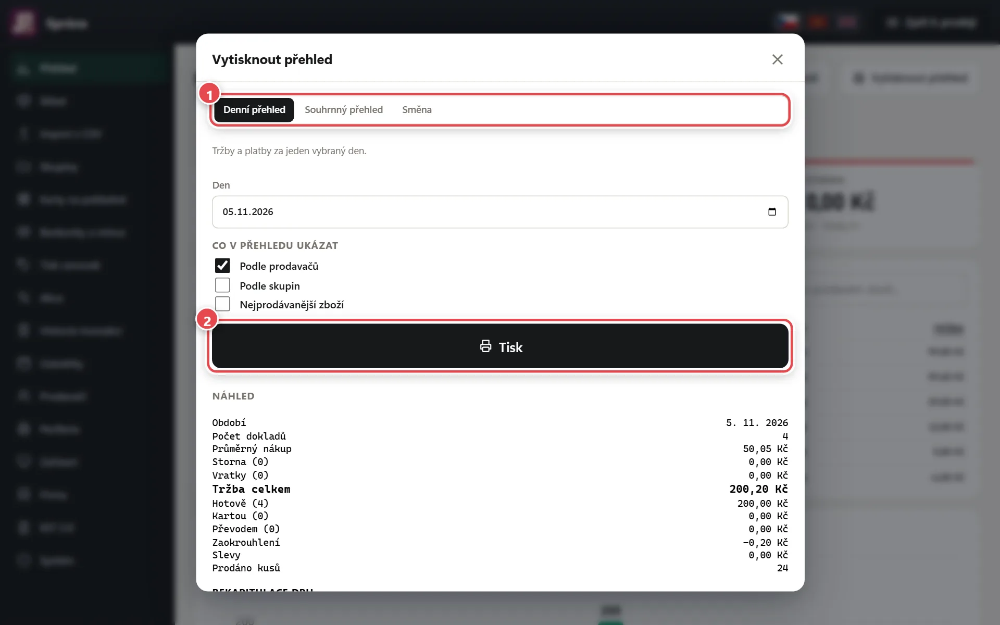
- Daily, summary or shift Choose a day, a period (e.g. a month) or one closing, and what to show.
- Print Prints on the receipt printer or an ordinary printer.

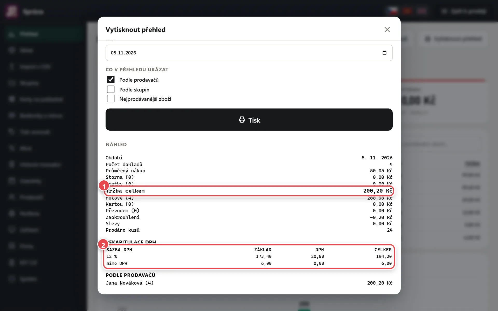
- Net sales Number of receipts, voids, refunds and sales – below by cash, card and transfer.
- VAT summary Base, VAT and total per rate – for your accountant.
Voids and refunds
Void a wrong sale, handle returned goods with a refund. Both are in the Receipt history.

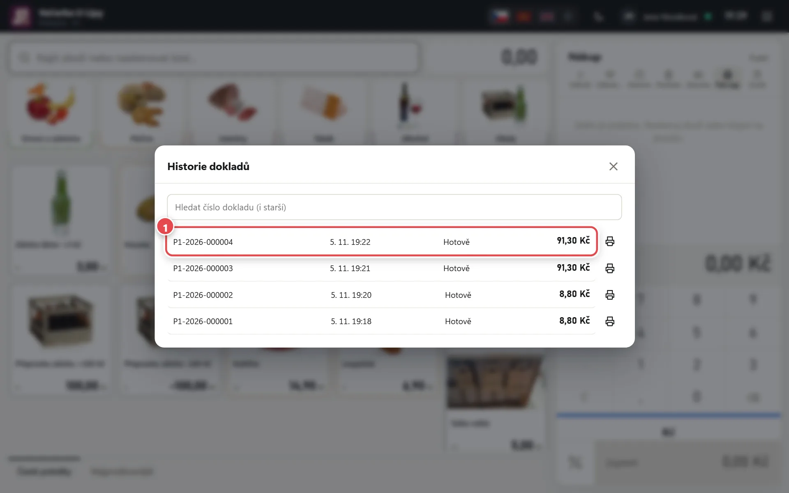
- Receipt Tap History in the bar above the sale and pick the receipt.

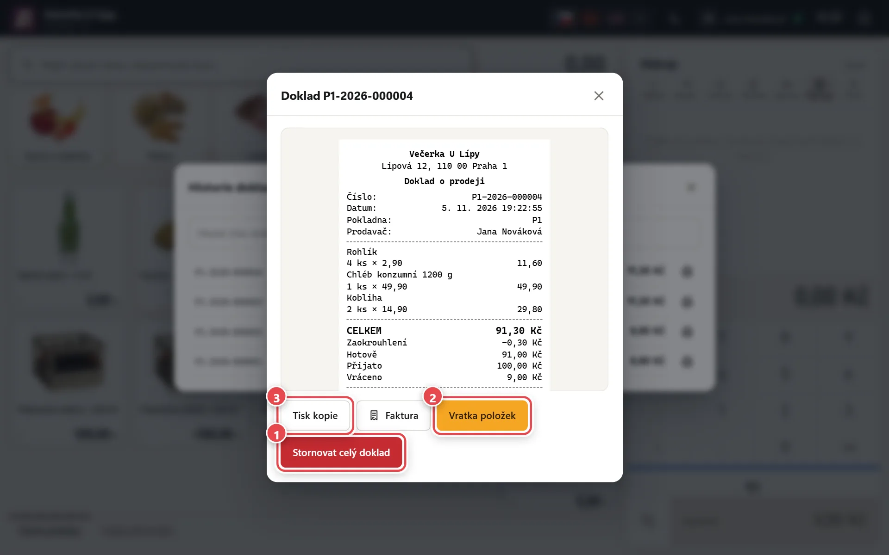
- Void whole receipt Cancels the whole sale – only for receipts from today's open till (before closing) with nothing refunded yet.
- Refund items The customer returns only part, or it's an older sale. Choose pieces and how the money goes back.
- Print copy Prints a copy; Invoice is next to it.
The till on the owner's phone
In Admin → System turn on notifications for every sale, sales on your phone and a daily e-mail summary.

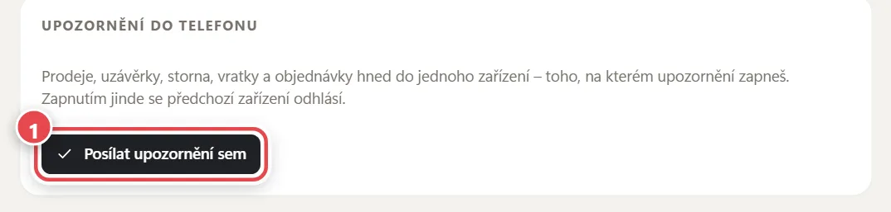
- Send notifications here Tap it on the phone that should get them. On iPhone first add SuperKasa to the home screen (Share → Add to Home Screen) and open it from the icon.

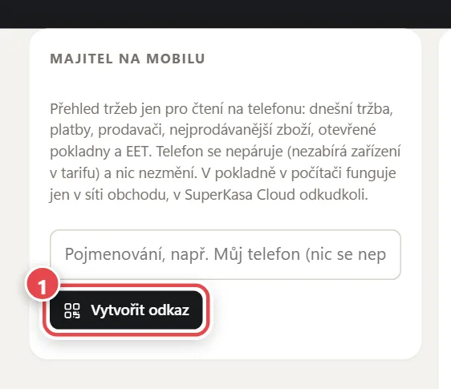
- Create link On a computer it shows a QR code to scan with your phone; on a phone, an Open button. Add the page to the home screen. Read-only; the link is shown only once.

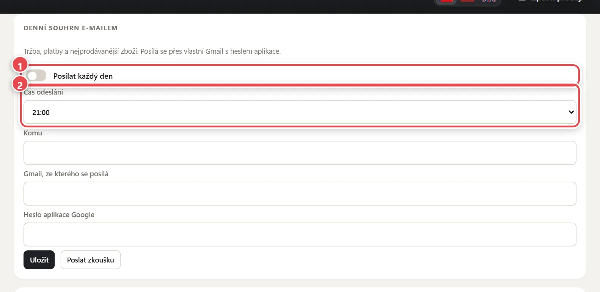
- Send every day Sales, payments and best sellers every day to your account e-mail.
- Send time When the summary arrives – e.g. after closing time.
Would you like to try SuperKasa?
The first 10 days are free, with no card and no commitment. Create your till in the browser in a few minutes – and if you like, we'll advise on the plan and equipment by phone.